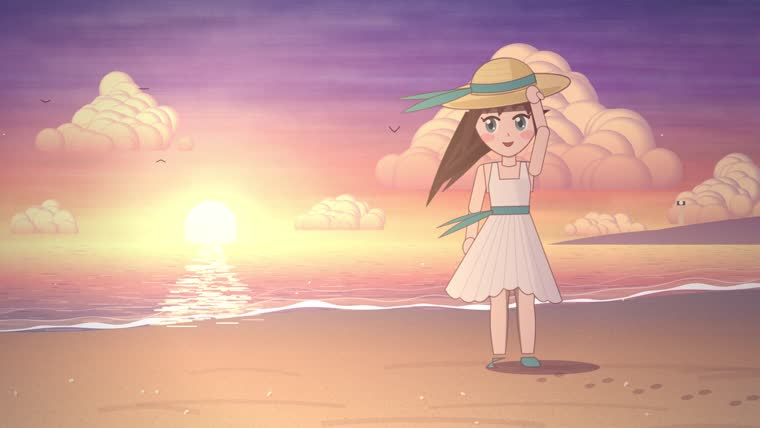
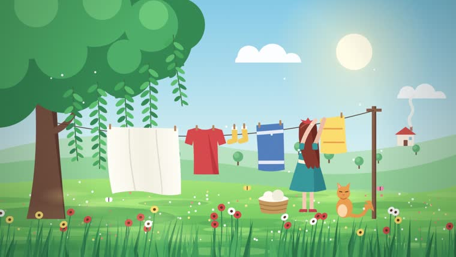
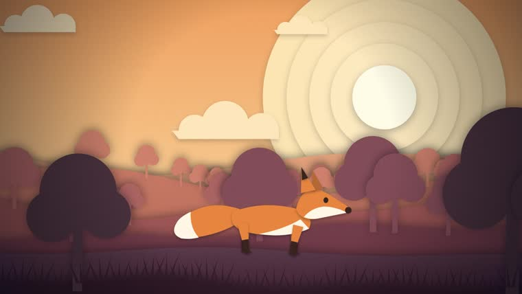

Cansou de pedir só uma roupa nova e receber outra personagem? Neste kit grátis, o Claude escreve um desenhista em código (é o que o kit chama de motor), que sabe desenhar um estilo, e uma ficha curta da cena: quem aparece, onde, que hora e o que faz. Para um filme novo, você troca a ficha e o desenhista fica, por isso o rosto nêo muda. Serve para quem quer fazer filme animado sem saber programar. Dá para começar no próprio site do Claude, sem instalar nada, ou no Claude Code (ou no Codex), num computador comum, sem placa de vídeo.
De sorteio a receita repetível
Um gerador de vídeo inventa tudo de novo a cada tentativa. Aqui, quem desenha é um programa que você aprovou, e ele desenha sempre do mesmo jeito.
😩 Com um gerador de vídeo
- Cada tentativa é um sorteio: você pede a mesma coisa e sai diferente.
- O rosto da personagem muda de uma tomada para a outra.
- O clipe é curto, e cada tentativa nova gasta crédito.
😌 Com um motor por estilo
- A mesma ficha no mesmo desenhista dá o mesmo vídeo, quadro por quadro.
- Você muda a roupa, o lugar ou a hora, e o rosto fica.
- Sem limite de 30 segundos: filme longo sêo vários filmes curtos, juntados depois.


A mesma Lia, com o mesmo rosto: o desenhista é o mesmo, só a ficha mudou. Os dois quadros saíram dos filmes de exemplo do kit.
🎭 A mesma cara na série inteira
A personagem que você aprovou volta igual em todo episódio, porque é o mesmo código que a desenha.
✏️ Você muda só o que pedir
"Mais devagar", "luz mais quente": a mudança vai para aquele ponto, e o resto do filme fica como estava.
💻 Sem placa de vídeo
O filme é montado no seu computador, só com o processador. Fazer o filme nêo gasta crédito de nenhum serviço.
Como isso muda o seu dia
Você nêo precisa programar para sentir a diferença. Veja três situações comuns de quem faz vídeo animado com IA.
📺 Uma série com personagem fixa
Hoje: cada episódio a personagem sai com outra cara, e quem assiste estranha.
Com o kit: o desenhista é o mesmo em todos. Episódio novo é uma ficha nova.
🏖️ Mudar só o cenário
Hoje: você pede "agora na praia" e vem outra moça, outro cabelo, outro traço.
Com o kit: a Lia foi da colina para a praia trocando só a ficha, como você viu acima.
🎚️ Ajustar um detalhe
Hoje: pedir "mais devagar" é uma tentativa nova, e tudo muda junto.
Com o kit: você diz o que quer mudar, e só aquilo muda.
- Primeira conversa · você escolhe o estilo
O Claude escreve o desenhista e mostra 3 quadros soltos para você olhar antes do filme inteiro. - Você aprova · o filme sai no seu computador
Um filme de 10 segundos ficou pronto em menos de um minuto no computador do teste. - Na semana seguinte · filme novo
Você abre outra conversa e pede só uma ficha nova. O desenhista já está pronto.
Entenda em poucos minutos

Um desenhista e uma ficha
Pense num desenhista de estúdio que só sabe um estilo, e muito bem. Você entrega a ele uma ficha curta, e ele desenha a cena. Ficha nova, cena nova, mesmo traço.
✍️ O desenhista (o motor)
O Claude escreve, uma vez, um programa que sabe desenhar um estilo: o rosto da personagem, o traço, as cores, o jeito de mexer. É a parte grande do trabalho.
📋 A ficha
Um texto pequeno com o que muda de um filme para o outro: quem, onde, que hora, que roupa, o que faz. No exemplo da Lia, a ficha é cerca de 70 vezes menor que o desenhista.
O som também é feito em código, no mesmo tempo da imagem: o passo, o vento e a música soam no instante em que aparecem.
Os 4 jeitos de animar
Cada jeito é um tipo de desenhista. Escolher o certo antes de pedir é metade do trabalho, e a IA ajuda você a escolher.

Formas planas em camadas, como papel cortado; o fundo anda menos que a frente. O mais simples de acertar.
O cenário é pintado uma vez e a personagem atua na frente. Bom para personagem com rosto que volta em vários filmes.

Um pequeno mundo 3D com luz e sombra, e a câmera passeando dentro. Bom para lugares e passeios.

Um desenho pronto ganha vida mexendo só algumas partes: roupa no varal, cabelo, rabo do gato.
📚 Receitas de estilo em português
O kit traz 31 receitas no formato "mesmo estilo, sua ideia", divididas pelos 4 jeitos: 12 de recorte de papel, 6 de palco com cenário pintado, 10 de maquete com câmera e 3 de boneco de pano. Você escolhe o estilo, escreve a sua ideia em uma ou duas frases (quem, onde, o que acontece) e manda. Só os 4 estilos acima já têm desenhista pronto e testado; os outros sêo receitas para você pedir o seu.
O que o método nêo promete
🚫 Nêo sai bem
- Pessoa real ou cara de filmagem: o código desenha formas, nêo pele nem tecido de verdade.
- Rosto de ator ou rosto humano realista. Rosto estilizado, de olhos grandes e poucas linhas, funciona.
- Luta, dança ou esporte: cada pose precisa ser ensinada ao desenhista.
- Boca sincronizada com fala.
🔀 O caminho híbrido
Quando você quer acabamento de filmagem, o filme do código vira a planta: ele decide câmera, tempo e personagem, e um gerador de vídeo dá a textura por cima.
Você ganha acabamento e perde a garantia de sair igual toda vez. O gerador é pago, e o kit só explica esse caminho: ele nêo foi testado aqui.
💰 Onde está o custo
Fazer o filme no seu computador nêo gasta crédito. O custo de verdade é a conversa com o Claude, e ele depende do seu plano. Para gastar menos:
- Reaproveite o desenhista: criar é caro, trocar a ficha é barato.
- Abra uma conversa nova para cada filme.
- Peça menos rodadas de conferência em estilo simples.
- Confira em rascunho pequeno e comece com filmes de 5 a 10 segundos.
Peça para a sua IA analisar o kit
Você nêo precisa instalar nada à mêo nem entender os arquivos. A própria IA lê o kit, ouve a sua ideia e diz o que dá para fazer.
0. Escolha por onde começar
🌐 Sem terminal, no site do Claude
- No site ou no aplicativo do Claude, abra as Configurações e ligue a criaçêo de arquivos e a execuçêo de código.
- Abra uma conversa nova.
- Na página de receitas do kit, copie uma receita de estilo e o bloco de regras que está na mesma página. Troque [SUA IDEIA AQUI] pela sua ideia.
- Cole tudo na conversa e baixe o MP4 que o Claude entregar.
💻 Com o Claude Code ou o Codex
O Claude Code é o Claude que trabalha numa pasta do seu computador: ele lê, cria e roda os arquivos do kit ali mesmo. Precisa de um plano pago do Claude e se baixa em claude.com/claude-code. O Codex é o equivalente da OpenAI. Por esse caminho, siga os passos 1 a 3 abaixo.
1. Abra a sua IA
O Claude Code, ou o Codex, aberto numa pasta do seu computador.
2. Cole o pedido abaixo
Troque a parte entre colchetes pela sua personagem. A IA lê o kit e explica em português simples, sem mudar nada ainda.
3. Diga sim ao que fizer sentido
Ela mostra o plano. Você aprova, ela prepara o kit e mostra os primeiros quadros.
Leia o kit "filme-em-codigo" em https://github.com/linnoff88-dev/filme-em-codigo (a página de instruções técnicas, o README, explica tudo, inclusive a instalaçêo). Quero um filme animado com esta personagem: [descreva quem é, onde está, que hora é e o que faz]. Antes de fazer qualquer coisa, me responda em português simples: 1. Qual dos 4 jeitos de animar combina com a minha ideia, e por quê? 2. O que o meu computador precisa ter para fazer o filme? 3. O que o método nêo vai conseguir fazer na minha ideia? Nêo instale nem crie nada ainda. Mostre o plano e espere eu dizer sim.
🛠️ É técnico e prefere instalar à mêo?
Os passos com os comandos, o que precisa estar instalado e os testes estêo na página de instruções técnicas do kit, no GitHub (o site onde o kit fica guardado).
Medimos de verdade, sem placa de vídeo
Os quatro filmes de exemplo do kit foram feitos neste computador e medidos um por um: 10 segundos de filme cada, na qualidade do YouTube (1080p).
recorte de papel
estilo anime, cenário pintado
maquete 3D
marionete

Medido em 19/11/2026 num computador sem placa de vídeo: cada filme usou em média uns 3 núcleos do processador (a cena 3D pede mais, quase 11). Os quatro filmes ficaram prontos entre 25 e 45 segundos cada. Num computador mais simples leva mais tempo, e "mesmo filme, mesmos quadros" foi conferido no mesmo computador e no mesmo navegador.
As ferramentas abertas por trás
O kit se apoia em ferramentas gratuitas e abertas, feitas por comunidades. Duas delas trabalham dentro do kit; as outras seguem a mesma ideia e servem para ir além.
🧊 three.js
Desenha mundos 3D dentro do navegador. É ela que monta a maquete da cabana na neve.
🎞️ FFmpeg
Junta os quadros e o som num arquivo de vídeo. É o último passo de todo filme do kit.
⚛️ Remotion
Faz vídeo escrevendo páginas da internet: cada quadro é calculado pelo número dele, como no kit.
📐 Manim
Anima formas e contas com precisêo; nasceu para vídeos de matemática. Esta é a versêo cuidada pela comunidade.
✏️ rough.js
Dá ao desenho um traço com cara de feito à mêo, com rabisco e hachura. Combina com o recorte de papel.
🎬 HyperFrames
Transforma uma página da internet em vídeo, com linha do tempo e montagem prontas. Serve como alternativa à montagem do kit.
Ver as 26 referências, com o que cada uma faz e a licença de uso.
Para ir além
Outros kits grátis do ARCKHÉ AI que fazem vídeo com código.
🎙️ video-codigo
Vídeo feito em código com narraçêo em voz local, e a imagem presa à palavra falada.
⏱️ sincronia-em-codigo
Imagem, contador e som andando juntos no mesmo relógio, e séries inteiras a partir de uma planilha.
🎨 estilo-em-skill
O estilo de um vídeo de que você gostou vira uma receita que a IA reaproveita.
Antes de você começar
Preciso saber programar?
Nêo. Você descreve a personagem e a cena, olha os quadros que a IA mostra e diz o que mudar. Quem escreve o código é o Claude.
Preciso de placa de vídeo?
Nêo. Os exemplos foram feitos só com o processador. O 3D é o mais lento, e mesmo assim o filme de 10 segundos saiu em menos de um minuto no computador do teste.
Quanto custa?
O kit e este guia sêo grátis. Fazer o filme no seu computador nêo gasta crédito. O que custa é a conversa com a IA que você já usa, e isso depende do seu plano.
O filme pode ser longo?
Pode. O jeito que funciona é fazer vários filmes curtos no mesmo desenhista e juntar depois. Pedir um filme longo de uma vez deixa a conversa cara e a IA perde o fio.
Dá para usar um desenho meu?
Dá, de dois jeitos. O pedido "com a sua referência" faz o Claude estudar a sua imagem e redesenhá-la em código, já em partes que mexem. O jeito "boneco de pano" usa um desenho em que essas partes (braço, cabelo, roupa) já vêm separadas; uma foto ou um JPG comum nêo basta, e quem separa as partes é o Claude, pelo pedido.
Serve para gente de verdade?
Nêo. O método é forte em estilo: papel, anime, maquete, marionete. Para cara de filmagem, use o caminho híbrido, com o filme do código como planta.
Funciona com o Codex?
O kit foi pensado para o Claude Code, mas o Codex também consegue ler o kit e dizer se ele serve para a sua ideia.
Funciona no meu computador?
Foi medido num computador só, sem placa de vídeo. Num computador mais simples o filme leva mais tempo. Windows e Mac nêo foram testados; a IA confere o que o seu precisa na análise.
E você: qual personagem você colocaria numa série inteira com a mesma cara? O kit está grátis no ARCKHÉ AI, direto na internet.